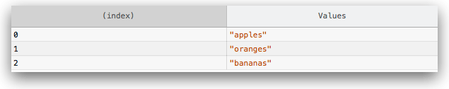
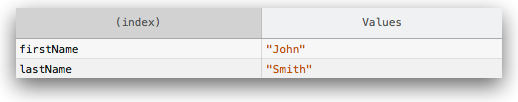
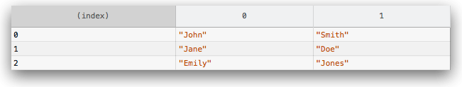
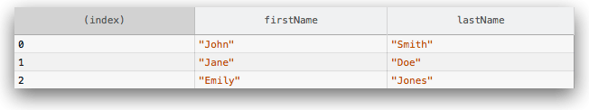
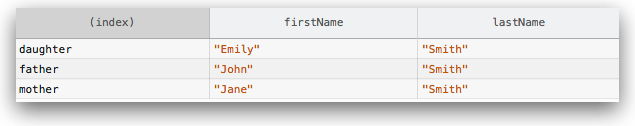
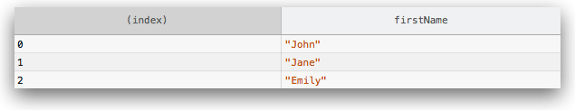

Displays tabular data as a table.
This function takes one mandatory argument data, which must be an array or
an object, and one additional optional parameter columns.
It logs data as a table. Each element in the array (or enumerable property
if data is an object) will be a row in the table.
The first column in the table will be labeled (index). If
data is an array, then its values will be the array indices. If
data is an object, then its values will be the property names. Note that
(in Firefox) console.table is limited to displaying 1000 rows (first row is
the labeled index).
{{AvailableInWorkers}}
The data argument may be an array or an object.
// an array of strings console.table(["apples", "oranges", "bananas"]);

// an object whose properties are strings
function Person(firstName, lastName) {
this.firstName = firstName;
this.lastName = lastName;
}
var me = new Person("John", "Smith");
console.table(me);

If the elements in the array, or properties in the object, are themselves arrays or objects, then their elements or properties are enumerated in the row, one per column:
// an array of arrays var people = [["John", "Smith"], ["Jane", "Doe"], ["Emily", "Jones"]] console.table(people);

// an array of objects
function Person(firstName, lastName) {
this.firstName = firstName;
this.lastName = lastName;
}
var john = new Person("John", "Smith");
var jane = new Person("Jane", "Doe");
var emily = new Person("Emily", "Jones");
console.table([john, jane, emily]);
Note that if the array contains objects, then the columns are labeled with the property name.

// an object whose properties are objects
var family = {};
family.mother = new Person("Jane", "Smith");
family.father = new Person("John", "Smith");
family.daughter = new Person("Emily", "Smith");
console.table(family);

By default, console.table() lists all elements in each row. You can use
the optional columns parameter to select a subset of columns to display:
// an array of objects, logging only firstName
function Person(firstName, lastName) {
this.firstName = firstName;
this.lastName = lastName;
}
var john = new Person("John", "Smith");
var jane = new Person("Jane", "Doe");
var emily = new Person("Emily", "Jones");
console.table([john, jane, emily], ["firstName"]);

You can sort the table by a particular column by clicking on that column's label.
console.table(data); console.table(data, columns);
datacolumns| Specification | Status | Comment |
|---|---|---|
| {{SpecName("Console API", "#table", "console.table()")}} | {{Spec2("Console API")}} | Initial definition |
{{Compat("api.Console.table")}}